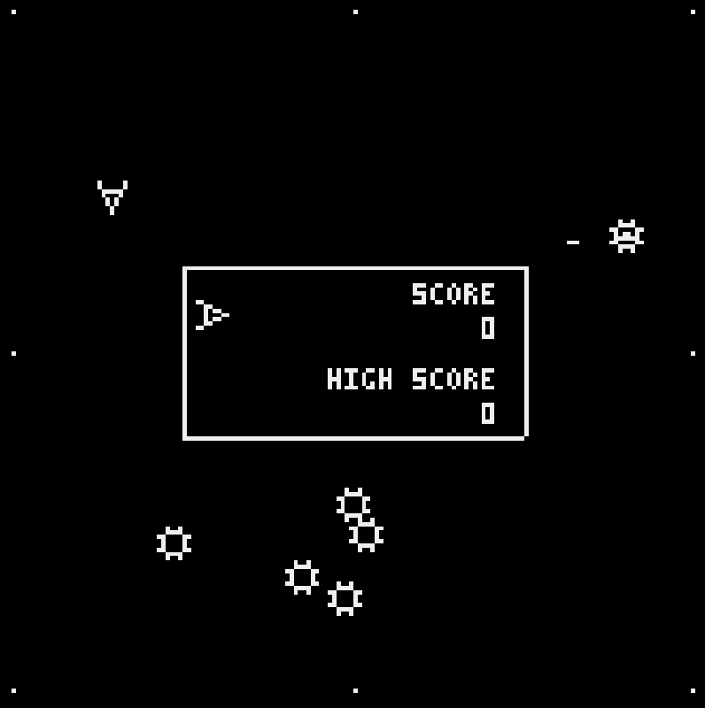

L'objectif était de reproduire le jeu Omega race. Ce projet a été proposé dans le cadre du module de concrétisation. Le but du projet n'est pas de reproduire à l'identique le jeu mais d'en utiliser les principes afin de développer en python une nouvelle version du jeu.
Le joueur pilote un vaisseau et doit tuer les vaisseaux ennemis. Une fois l'entièreté des vaisseaux ennemis tués le joueur augmente de niveau. Il existe 3 différents vaisseaux:
Le CommandShip et le DeathShip peuvent déposer des mines.
Ils déposent des PhotonMines et le DeathShip peut également déposer des VaporMines.
Chaque ennemi vaut un certain nombre de points:
Le joueurs et les ennemis se déplacent dans un rectangle delimité par des champs de forces sur lesquels ils rebondissent. Au milieu de l'écran est situé un tableau sur lequel est indiqué le score et le nombre de vies restantes. 
Le joueur possède initialement 3 vies supplémentaires. A chaque fois que le joueur meurt on réinitialise le niveau.